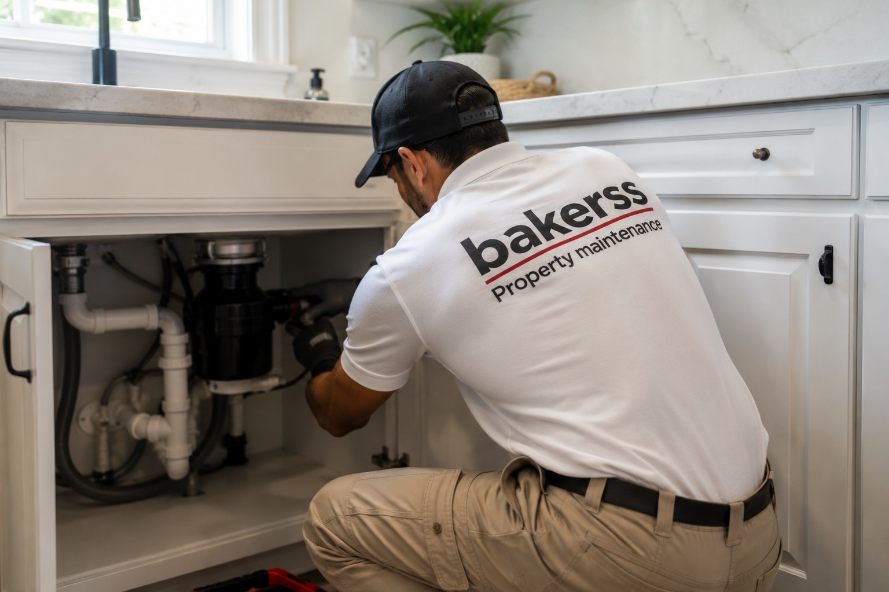

Plumbing Repairs in Myrtle Beach, Murrells Inlet & Horry County, SC
Leaky faucets, running toilets, fixture installation, drain cleaning, and preventative maintenance. Convenient property maintenance plumbing — not emergency trade pricing — for homeowners and rental owners across Horry County.

Silo: Property Trades
Plumbing Repairs for Coastal Horry County Properties
Property maintenance plumbing is different from emergency plumbing. Bakerss handles the routine repairs and fixture work that every home and rental property needs — leaky faucets, running toilets, slow drains, and fixture installations — at property maintenance pricing, not emergency call-out rates. We're the plumbing arm of your all-in-one property maintenance plan.
Coastal properties face additional plumbing challenges: hard water mineral buildup, salt air corrosion on fixture hardware, and the wear that comes from vacation rental properties with dozens of different users per month. Bakerss knows what Horry County properties need and handles it without the overhead of a full plumbing company.
What Our Plumbing Repairs Service Includes
- ✓ Leaky faucet repair and fixture replacement
- ✓ Running toilet repair and component replacement
- ✓ Slow drain cleaning and clearing
- ✓ Showerhead and faucet installation
- ✓ Garbage disposal installation and repair
- ✓ Outdoor hose bib repair and replacement
- ✓ Under-sink supply line and P-trap repair
- ✓ Toilet installation and replacement
- ✓ Minor pipe leak repair
- ✓ Preventative plumbing inspection during maintenance visits
Coastal Considerations in Horry County
- ✓ Hard water buildup — Horry County water causes mineral deposits in fixtures and aerators requiring regular cleaning and replacement
- ✓ Salt air hardware corrosion — exterior plumbing fixtures and hose bibs near the coast corrode faster than inland properties
- ✓ Vacation rental wear — rental properties with high occupant turnover experience accelerated fixture wear and increased repair frequency
- ✓ Seasonal property preparation — second homes need plumbing checks before occupancy season begins
Combine Plumbing Repairs With These Property Trades
Keep your property completely maintained with these complementary services — all from one vendor:
Plumbing Repairs by Location
Plumbing Repairs Across Horry County — By City
Plumbing Repairs in Myrtle Beach, SC
Myrtle Beach vacation rentals and second homes need reliable plumbing maintenance between guest stays. We handle fixture repairs and preventative checks to keep your property operational.
Myrtle Beach Services →Plumbing Repairs in Murrells Inlet, SC
Murrells Inlet waterfront properties deal with elevated humidity and mineral-rich water that accelerates fixture wear. Our maintenance plumbing keeps your property's systems performing.
Murrells Inlet Services →Plumbing Repairs in Surfside Beach, SC
Surfside Beach residential and rental properties benefit from regular plumbing maintenance — especially for properties that sit vacant between seasonal occupancy periods.
Surfside Beach Services →Plumbing Repairs in Garden City, SC
Garden City homes and rentals need plumbing attention before and after peak season. We handle the fixture and drain repairs that keep guest-ready properties in top condition.
Garden City Services →Plumbing Repairs in Horry County, SC
We provide property maintenance plumbing across all of Horry County — one reliable team for routine repairs and preventative care throughout the service area.
Horry County Services →Common Questions
Plumbing Repairs FAQ — Myrtle Beach & Horry County
Get Property Maintenance Plumbing in Myrtle Beach
Serving Myrtle Beach, Murrells Inlet, Surfside Beach, Garden City, and all of Horry County. Routine repairs and fixture work at property maintenance pricing — not emergency rates.